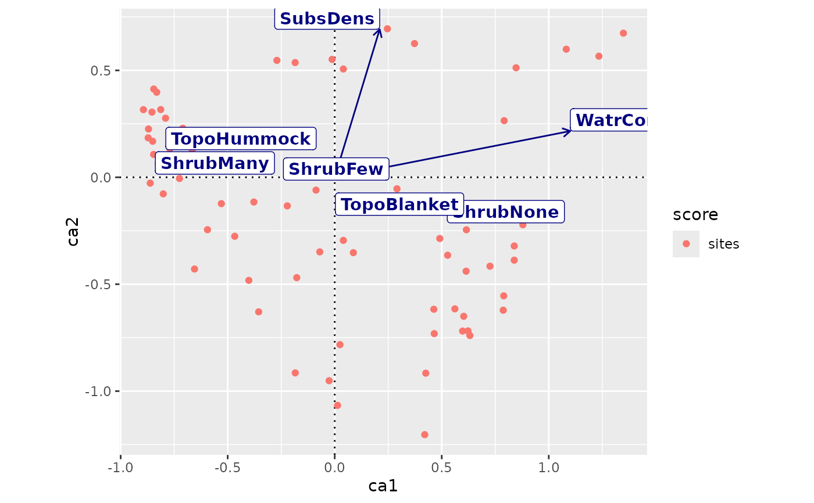

Function adds layers of fitted vectors and centroids of factor
levels in an ordiggplot() graph.
Arguments
- object
vegan::envfit()result object- text
add text to plot (logical).
- box
write text on a non-transparent label (logical).
- arrow.mul
arrow multiplier.
- arrow.params, text.params
List of additional parameters to
ggplot2::geom_segment()for arrows, and to text labels of both arrows and centroids of factor levels (ggplot2::geom_text(),ggplot2::geom_label()).- ...
Other parameters passed to all graphical functions
geom_ordi_arrow(),geom_ordi_text()andgeom_ordi_label().
Value
Returns ggplot2 layers geom_segment for arrows and
geom_text or geom_label for their text labels (when
appropriate), and another layer of geom_text or geom_label
for the centroids of factor leves (when appropriate). The score
type is called envfit.
Details
Function adds a previosly fitted vegan::envfit() model. This does
not adapt to changes in the ordiggplot() object, for instance in
scaling or axes, but it must re-fitted for a changed model.
Examples
library(vegan)
#> Loading required package: permute
library(ggplot2)
data(mite, mite.env, package = "vegan")
mod <- cca(mite)
## you must have same scaling in envfit() and ordiggplot()
ef <- envfit(mod ~ Shrub+Topo+WatrCont+SubsDens, mite.env,
scaling = "sites")
ordiggplot(mod, scaling="sites") +
geom_ordi_axis() +
geom_ordi_point("sites") +
autolayer(ef, arrow.mul=1.3, col="navy", box=TRUE,
text.params=list(mapping=aes(fontface="bold")))
